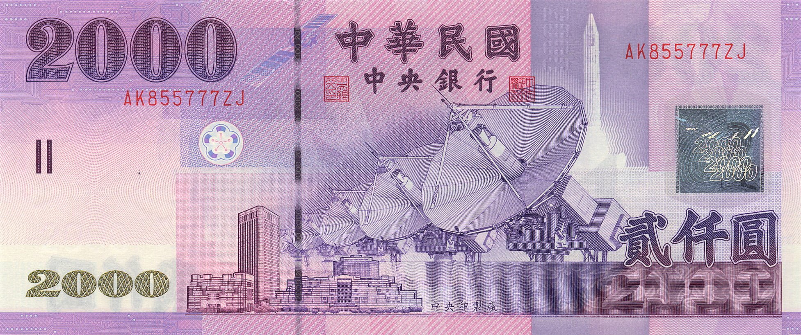

2000元鈔票

南湖大山
地點：台中市和平區/花蓮秀林鄉，屬太魯閣霸國家公園
花費時間：3-4天
難度：高
特色：中央山脈第三高峰，南湖大山與玉山、雪山、秀姑巒山、北大武山合稱「五岳」。山型龐大厚重、氣勢非凡，有帝王之山、王者之山之稱。
櫻花鉤吻鮭(台灣國寶魚)
台灣特有種
學名：Oncorhynchus masou formosanus
別名：台灣鮭、台灣鱒、本邦(bunbun泰雅族語)
分類：鮭科
狀態：瀕臨絕種
分布範圍：主要棲息在18度以下的高山森林溪流，目前僅分布於武陵地區的七家灣溪及高山溪
特徵：身體側扁呈紡錘形，背部青綠色，腹部為銀白色，體側有8~12個黑色橢圓形斑點，側線上方有10~30個小黑點，體長可達30~40公分。櫻花鉤吻鮭的稀有與瀕臨絕種以及獨特的特性，遂得「台灣國寶魚」之美名。
1000元鈔票
玉山
地點：南投縣與高雄市的交接，屬玉山國家公園
全長：單程10.9公里
花費時間：2天
難度：中
特色：為台灣群山之首、東北亞第一高峰，也是台灣這座高山島的最佳代表。
帝稚
台灣特有種
別名：台灣帝雉、黑長尾雉
學名：Syrmaticus mikado
分類：雞形目雉科
狀態：近危
分布範圍：海拔1800至3500公尺以下針葉林、草原混生地帶，很喜歡濃霧，有「迷霧中的王者」之稱
特徵：公帝雉與公藍腹鷴頗為相似，體長70~86公分，乍看都有藍色金屬光澤的羽毛，唯帝雉全身羽毛均為藍黑色，只有尾巴有白色橫帶紋，腳部為暗灰色。母帝雉與母藍腹鷴也長得很像，體長45~60公分，身體為褐色、黑色、土色為色調，尾巴有黑色橫斑，腳部為暗灰色。
500元鈔票
大霸尖山
地點：新竹縣尖石鄉/苗栗縣泰安鄉，屬雪霸國家公園
全長：單程31公里
花費時間：3天
難度：中-高
特色：位於雪山山脈的大霸尖山海拔3492公尺，山勢磅礡壯麗，有「世紀奇峰」之美譽，自古是泰雅、賽夏兩原住民族的聖山；山形突出四面懸壁寸草不生，外貌有如大酒桶，又稱「熬酒桶山」或「酒桶山」，與中央尖山、達芬尖山，合稱為「台灣三尖」。
台灣梅花鹿
台灣特有種
學名：Cervus nippon taiouanus
分類：鹿科
狀態：曾一度於野外消失，後於墾丁進行復育，數量漸增；綠島的梅花鹿則為人工飼養後野放
分布範圍：棲息於海拔200公尺以下的草原、丘陵地區
特徵：背上有白色似梅花的斑點，公鹿體型較大，從兩歲時開始長角，每年增加一個分叉，職至五歲後才停止分叉，而母鹿體型較小，且沒有角。